Taugeh Taukwa
Plus: Random Vegetable Stir-Fry! | Ah Ma's | Cooked on 13 March 2026
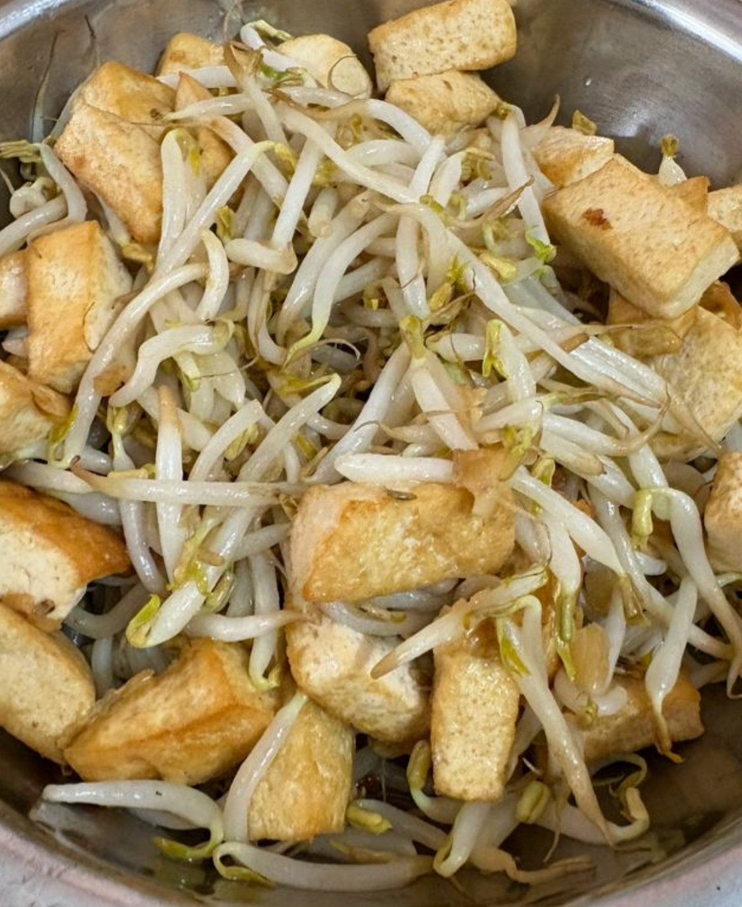
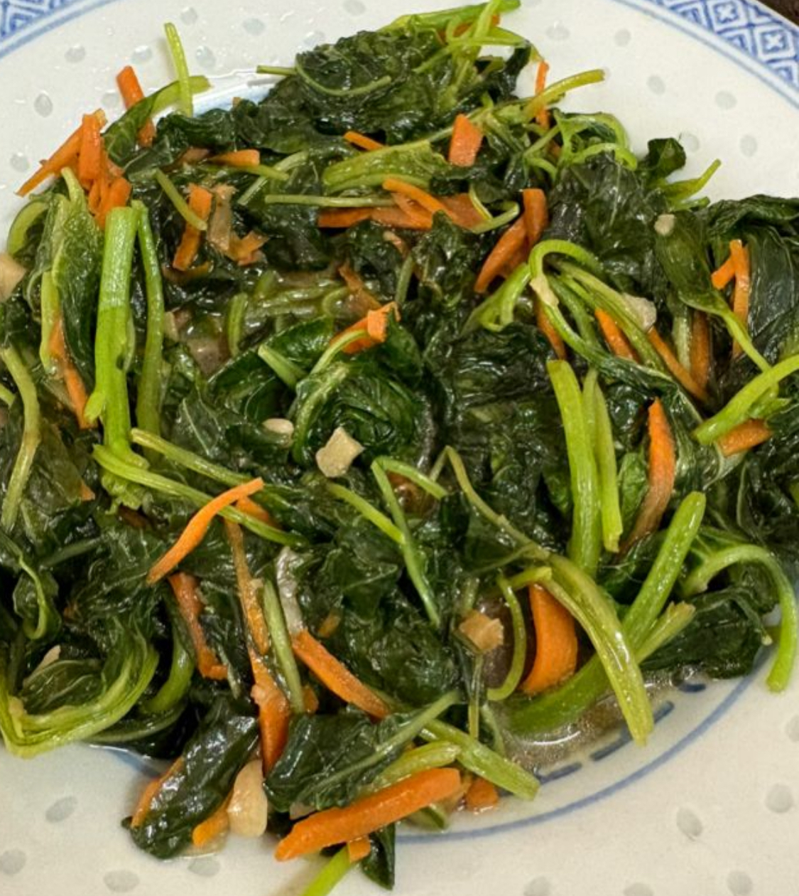
How to stir-fry any random vegetables
Wash and dry the vegetables.
Oil, minced garlic, light soy sauce, veggies, water to deglaze, Ajinomoto.
Taugeh Taukwa steps
1. Frying the taukwa
Wash and dry taukwa.
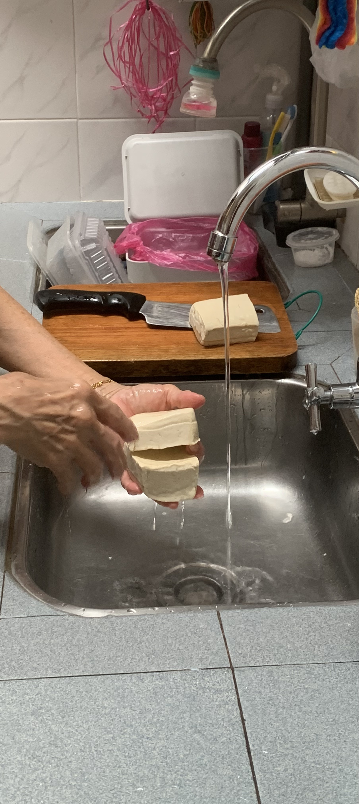
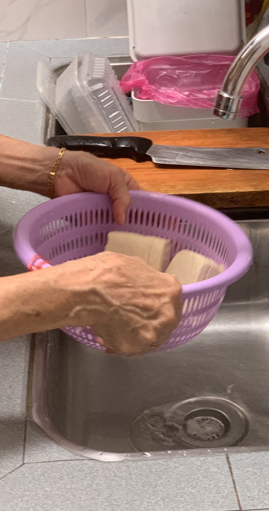
▲
▲
Cut taukwa.
▲
▲
Heat oil and fry taukwa.
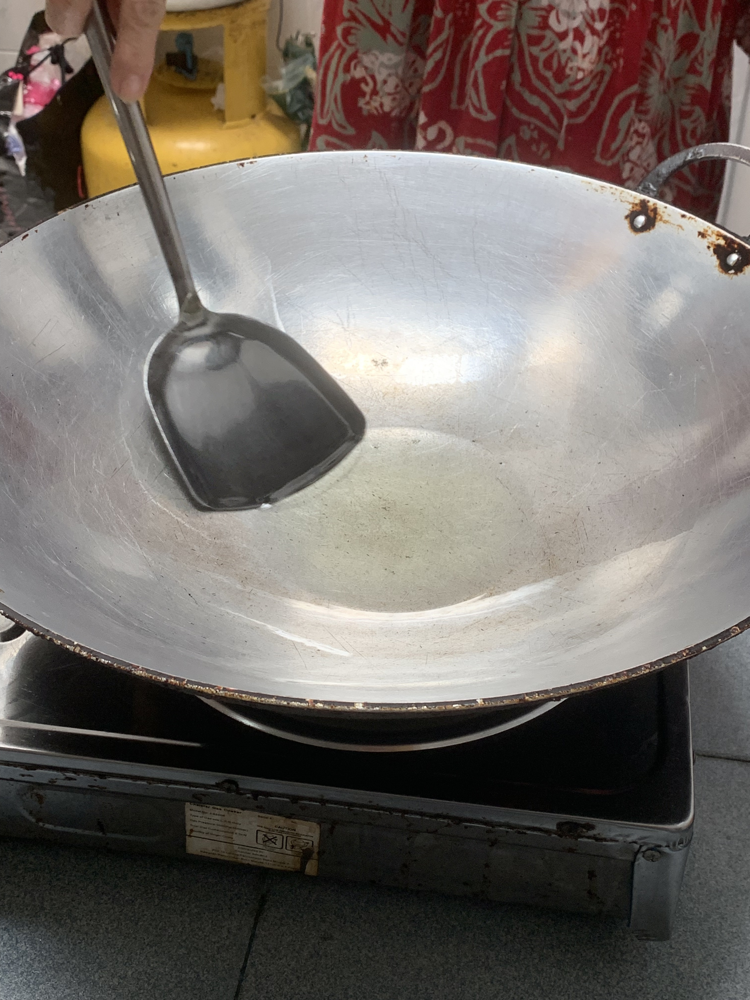
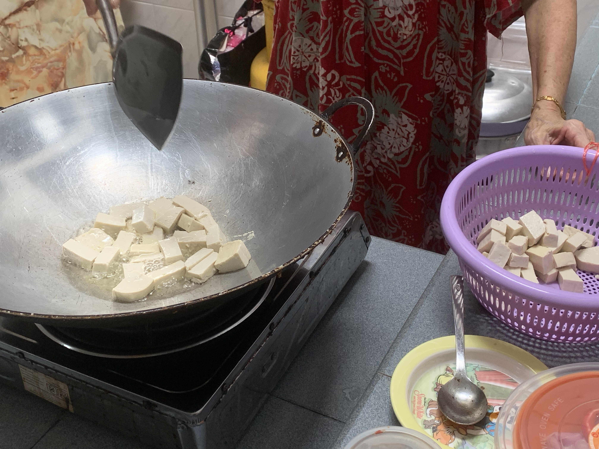
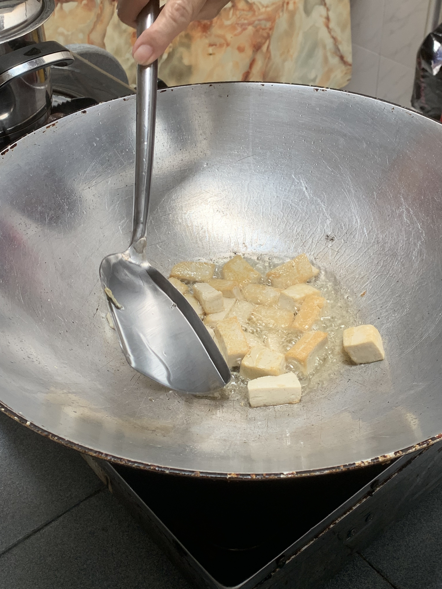
▲
▲
2. Frying everything
Oil, garlic, light soy sauce, bean sprouts, taukwa, water to deglaze, Ajinomoto. Add green onions too for colour (we forgot to buy them).
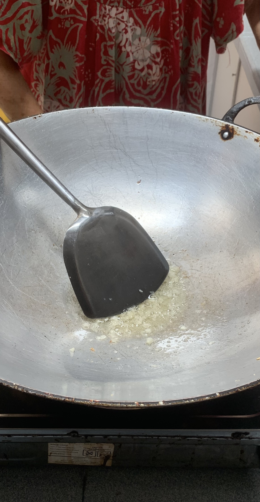
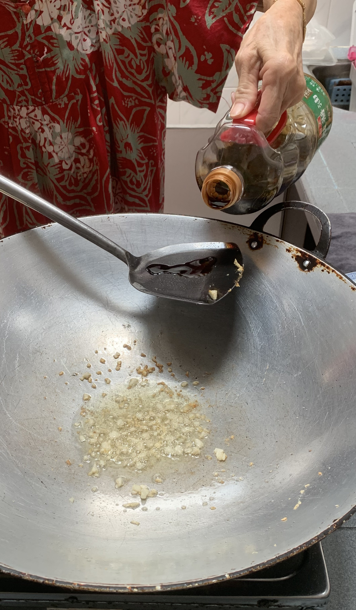
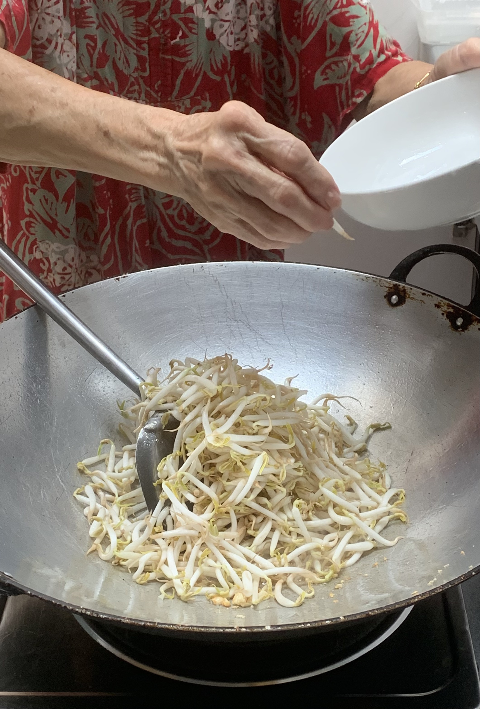
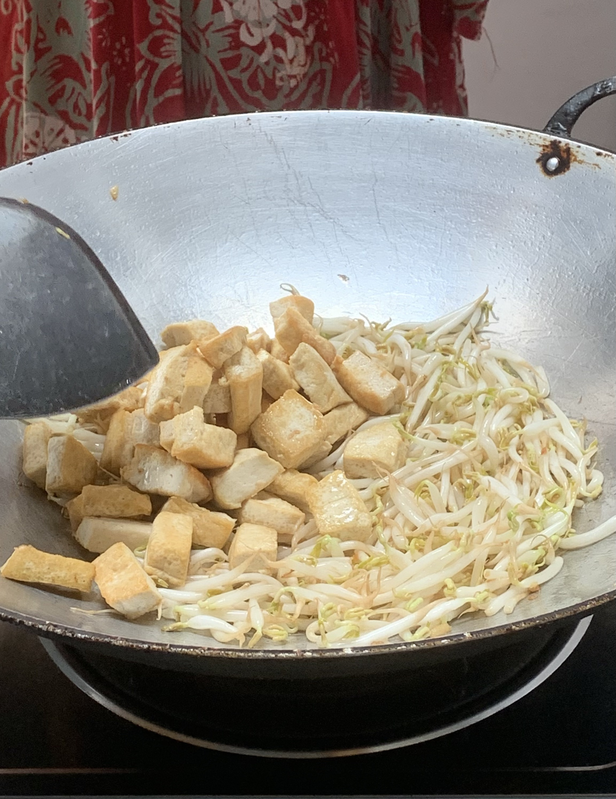
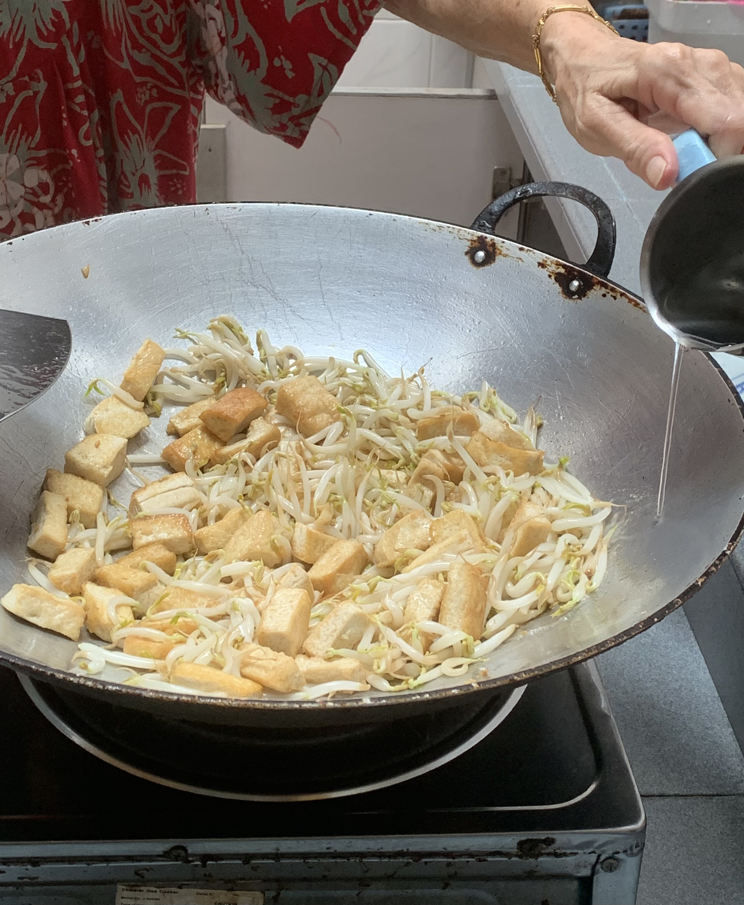
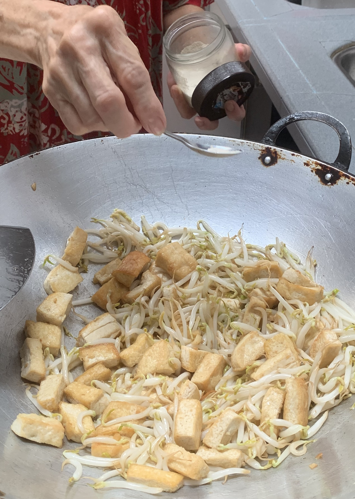
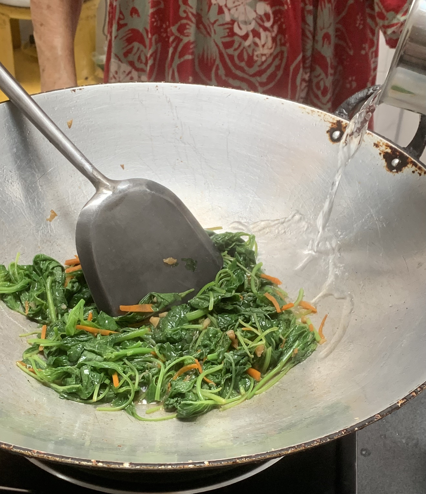
▲
▲
Done!
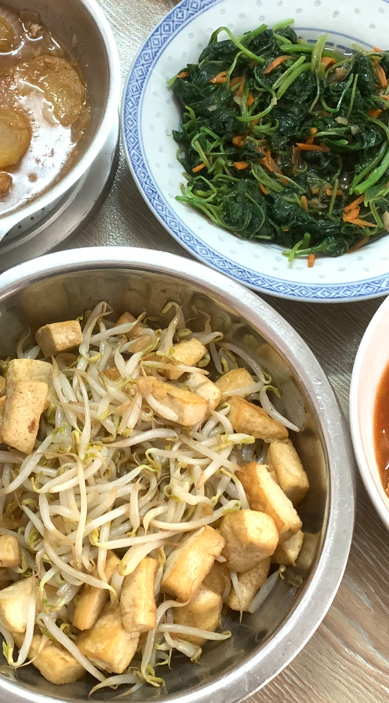